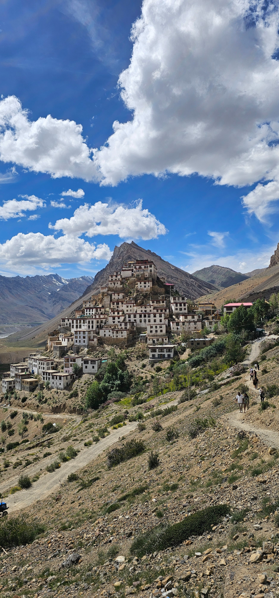
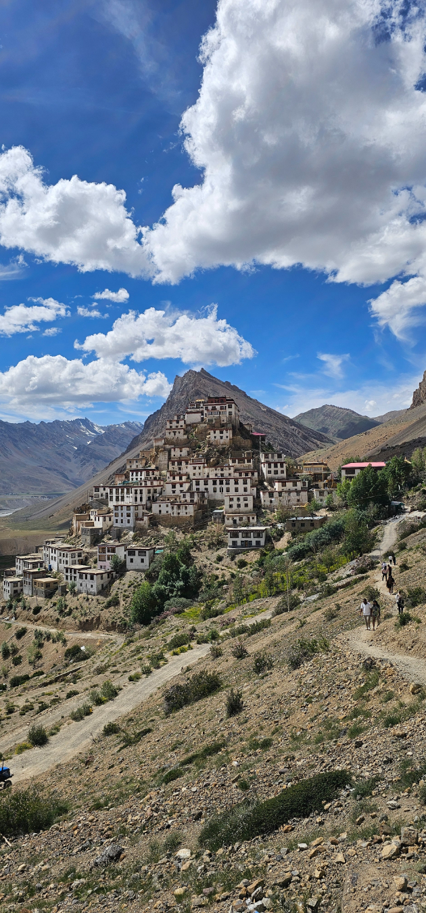

La Genesi di 'Orivana' (Ispirata agli Echi Himalayani)
L’aria fresca di montagna, carica del profumo dei pini e della neve lontana, riempiva i polmoni del viaggiatore mentre la sua jeep percorreva le tortuose strade della Valle di Spiti. Artista tessile e cercatore d'ispirazione oltre i confini del suo studio cittadino, aveva intrapreso un viaggio verso questo angolo remoto dell’Himachal Pradesh, in India, nel cuore della catena himalayana. Ciò che scoprì non fu solo un paesaggio mozzafiato, ma un legame profondo con una terra in cui ogni elemento sembrava sussurrare la propria antica storia
La Tela della Creazione: I Paesaggi di Spiti
I suoi occhi, da tempo abituati al grigio urbano, furono subito catturati dalla bellezza selvaggia che si apriva davanti a lui. Le montagne antiche si ergevano come sentinelle silenziose, i loro volti scolpiti dal tempo. Le loro sfumature – ocra profondo, marroni, oro baciato dal sole e grigi rocciosi, coronati dal bianco puro della neve – evocavano meraviglia. Non erano solo montagne: erano tavolozze viventi che ispiravano toni naturali per le sue future creazioni.


In basso, il fiume Spiti scorreva come un nastro scintillante. Le sue rive, mosaico di ciottoli e sabbia, suggerivano idee per trame e superfici tattili. Le vivaci macchie verdi dei campi coltivati parlavano di resilienza. Il cielo vasto e nuvoloso evocava possibilità senza confini e una tranquillità profonda.
 

Tra le meraviglie, il mozzafiato Ponte di Chicham, sospeso su una gola profonda, ispirava pensieri di connessione e forza. Più avanti, l’etereo Lago Chandratal appariva come un’oasi serena: le sue acque blu, circondate da montagne brulle, riflettevano una purezza che ispirava eleganza naturale.
Sussurri del Patrimonio: Villaggi e Monasteri
Proseguendo nel viaggio, l’architettura unica dei villaggi e dei monasteri di Spiti emergeva, aggrappata ai pendii come antichi gioielli. Le pareti bianche, adornate da bandiere di preghiera e intagli in legno, raccontavano tradizioni profonde. Il Monastero di Key, una fortezza della fede, testimoniava l’ingegno umano e l’arte.
Il viaggiatore osservava gli artigiani locali lavorare lana e legno con maestria, creando oggetti funzionali e carichi di significato culturale. Le forme eleganti delle case, i motivi geometrici nei tessuti e i colori vivaci degli abiti tradizionali consolidarono la sua visione: una linea di prodotti che onorasse il patrimonio indiano abbracciando la sostenibilità moderna.
La Nascita di 'Orivana' (Ispirata agli echi himalayani))
Da questo viaggio profondo nacque "Orivana", una collezione di tessuti e decorazioni per la casa realizzati a mano, pensati come riflesso tangibile della Valle di Spiti.
- Tavolozza di Colori: Ispirata alle montagne, con tinture naturali da piante locali: marroni terrosi, grigi tenui, blu profondi come il cielo, e verdi vivaci come la flora della valle.
- Trame e Tessuti: Texture montane e flusso del fiume tradotti in trame resistenti in lana e cotone morbido.
- Design: Motivi geometrici dell'architettura Spitiana e dipinti thangka, accanto a forme astratte ispirate a valli e vette.
- Sostenibilità e Artigianato: Ogni prodotto sarà realizzato con rispetto per l'ambiente e per le comunità locali, collaborando con artigiani indiani e promuovendo salari equi.
"Orivana", ispirata agli Echi Himalayani, non sarà solo una collezione di prodotti: saranno storie intrecciate nei tessuti, che portano con sé la forza delle montagne, la quiete del fiume e l’anima vibrante di Spiti. Un pezzo dell’Himalaya nelle case di tutto il mondo.